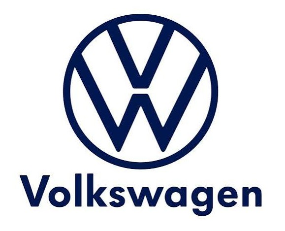
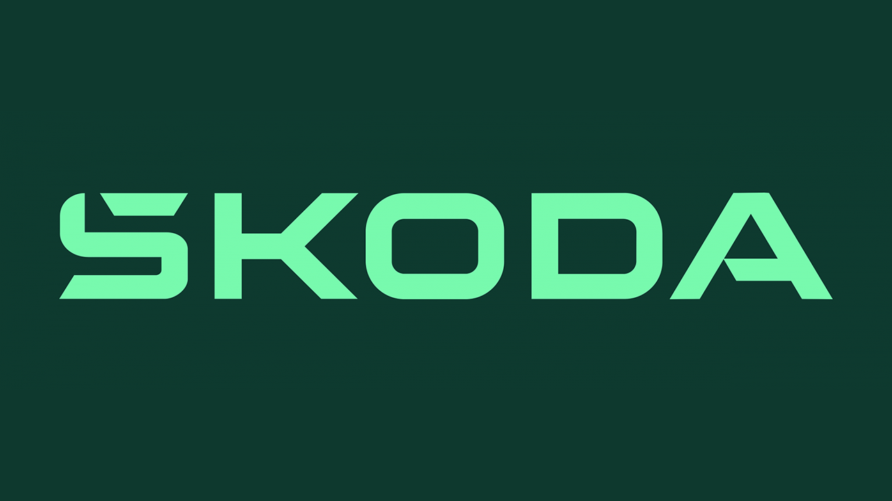

Ovlašteni servis koji spaja stručnost i profesionalnu podršku.
Auto kuća Ćirić pruža redovne servise, mehaničarske i limarske zahvate, računalnu dijagnostiku i pripremu vozila za svaku sezonu.
Auto kuća Ćirić pruža redovne servise, mehaničarske i limarske zahvate, računalnu dijagnostiku i pripremu vozila za svaku sezonu.
Servis je usmjeren na vozila Volkswagen grupacije te koristi postupke i radne tokove prilagođene pojedinoj marki.
Brzo očitavanje grešaka, provjera elektronike i planiranje popravaka uz jasan pregled potrebnih radova.
Rezervirati svoj termin možete na broj telefona, mail ili u servisu od 08:00 do 16:00

